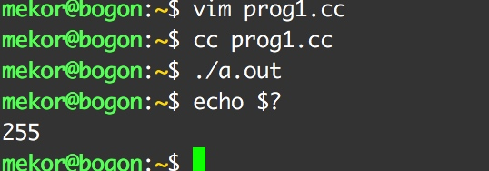

<!DOCTYPE html>
<!--[if IEMobile 7 ]><html class="no-js iem7"><![endif]-->
<!--[if lt IE 9]><html class="no-js lte-ie8"><![endif]-->
<!--[if (gt IE 8)|(gt IEMobile 7)|!(IEMobile)|!(IE)]><!--><html class="no-js"><!--<![endif]-->
<head>
  <meta charset="utf-8">
  <title>
    
  李小争
  

  </title>
  <meta name="author" content="">
  <meta name="description" content="记录开发中遇到的一些问题">

  <meta name="HandheldFriendly" content="True">
  <meta name="MobileOptimized" content="320">
  <meta name="viewport" content="width=device-width, initial-scale=1">
  
  <link href="asset/css/screen.css" media="screen, projection" rel="stylesheet" type="text/css">
  <link href="atom.xml" rel="alternate" title="李小争" type="application/atom+xml">
  <script src="asset/js/modernizr-2.0.js"></script>
  <script src="asset/js/jquery.min.js"></script>
  <style type="text/css">
  .cat-children-p{ padding: 6px 0px;}
  .hljs{background: none;}
  </style>
  <script type="text/javascript">
  var isAddSildbar = true;
  </script>
  <script src="asset/js/octopress.js" type="text/javascript"></script>
</head>
<script type="text/javascript">
//链接新开窗口
function addBlankTargetForLinks () {
  $('a[href^="http"]').each(function(){
      $(this).attr('target', '_blank');
  });
}
$(document).ready(function(event) {
  addBlankTargetForLinks();
});
</script>
<body   >
  <header role="banner"><hgroup>
  <h1><a href="index.html">李小争</a></h1>
  
    <h2>记录开发中遇到的一些问题</h2>
  
</hgroup>

</header>
  <nav role="navigation"><ul class="subscription" data-subscription="rss">
  <li><a href="atom.xml" rel="subscribe-rss" title="subscribe via RSS">RSS</a></li>
  
</ul>
  
<form action="http://google.com/search" method="get">
  <fieldset role="search">
    <input type="hidden" name="q" value="site:www.citynight.cn/blog" />
    <input class="search" type="text" name="q" results="0" placeholder="Search"/>
  </fieldset>
</form>
  
<ul class="main-navigation">

  <li id=""><a target="self" href="index.html">Home</a></li>

  <li id=""><a target="_self" href="archives.html">Archives</a></li>

</ul>

</nav>
  <div id="main">
    <div id="content"> 
<div class="blog-index">

	<article>
		 <header>
		  	<h1 class="entry-title"><a href="14878335740172.html">数组传递</a></h1>
			<p class="meta"><time datetime="2017-02-23T15:06:14+08:00" 
			pubdate data-updated="true">2017/2/23</time></p>
		 </header>
	  	<div class="entry-content">
		  	
		  	<p>把A控制器中的数组 传递给 B  ,然后 B 再把数据传递给 C<br />
这时如果 A中数组进行了修改,那么 C 中数据也会修改</p>


		</div>

		

	</article>
 
	<article>
		 <header>
		  	<h1 class="entry-title"><a href="14877545165696.html">synchronized(object)</a></h1>
			<p class="meta"><time datetime="2017-02-22T17:08:36+08:00" 
			pubdate data-updated="true">2017/2/22</time></p>
		 </header>
	  	<div class="entry-content">
		  	
		  	<blockquote>
<p>synchronized关键字代表这个方法加锁,相当于不管哪一个线 程A每次运行到这个法时,都要检查有没有其它正在用这个方法的线程B（或者C D等）,有的话要等正在使用这个方法的线程B（或者C D）运行完这个方法后再运行此线程A,没有的话,直接运行 它包括两种用法：synchronized 方法和 synchronized 块。</p>
</blockquote>
<p>##1. synchronized 方法：<br />
通过在方法声明中加入 synchronized关键字来声明 synchronized 方法。如：<br />
　　<code>public synchronized void accessVal(int newVal); </code><br />
　　synchronized 方法控制对类成员变量的访问：每个类实例对应一把锁，每个 synchronized 方法都必须获得调用该方法的类实例的锁方能执行，否则所属线程阻塞，方法一旦执行，就独占该锁，直到从该方法返回时才将锁释放，此后被阻塞的线程方能获得 该锁，重新进入可执行状态。这种机制确保了同一时刻对于每一个类实例，其所有声明为 synchronized 的成员函数中至多只有一个处于可执行状态（因为至多只有一个能够获得该类实例对应的锁），从而有效避免了类成员变量的访问冲突（只要所有可能访问类成员变 量的方法均被声明为 synchronized）。<br />
　　在 Java 中，不光是类实例，每一个类也对应一把锁，这样我们也可将类的静态成员函数声明为 synchronized ，以控制其对类的静态成员变量的访问。<br />
　　synchronized 方法的缺陷：若将一个大的方法声明为synchronized 将会大大影响效率，典型地，若将线程类的方法 run() 声明为 synchronized ，由于在线程的整个生命期内它一直在运行，因此将导致它对本类任何 synchronized 方法的调用都永远不会成功。当然我们可以通过将访问类成员变量的代码放到专门的方法中，将其声明为 synchronized ，并在主方法中调用来解决这一问题，但是 Java 为我们提供了更好的解决办法，那就是 synchronized 块。<br />
　　<br />
##2. synchronized 块：<br />
通过 synchronized关键字来声明synchronized 块。语法如下：</p>
<pre><code>　　synchronized(syncObject) { 
　　//允许访问控制的代码 
　　}
</code></pre>
<p>　　<br />
　　synchronized 块是这样一个代码块，其中的代码必须获得对象 syncObject （如前所述，可以是类实例或类）的锁方能执行，具体机制同前所述。由于可以针对任意代码块，且可任意指定上锁的对象，故灵活性较高<br />
　　<br />
##对synchronized(object)的一些理解<br />
　<br />
**一、**当两个并发线程访问同一个对象object中的这个synchronized(this) 同步代码块时，一个时间内只能有一个线程得到执行。另一个线程必须等待当前线程执行完这个代码块以后才能执行该代码块。</p>
<p>**二、**当一个线程访问object的一个synchronized(this)同步代码块时，其 他线程对object中所有其它synchronized(this)同步代码块的访问将被阻塞。</p>
<p>**三、**然而，当一个线程访问object的一个synchronized(this)同步代码块 时，另一个线程仍然可以访问该object中的除synchronized(this)同步代码块以外的部分。</p>
<p>**四、**第三个例子同样适用其它同步代码块。也就是说，当一个线程访问object的一个 synchronized(this)同步代码块时，它就获得了这个object的对象锁。结果，其它线程对该object对象 所有同步代码部分的访问都被暂时阻塞。</p>
<p>**五、**以上规则对其它对象锁同样适用</p>
<p>原文: <a href="http://fei263.blog.163.com/blog/static/9279372420103752814/">http://fei263.blog.163.com/blog/static/9279372420103752814/</a></p>


		</div>

		

	</article>
 
	<article>
		 <header>
		  	<h1 class="entry-title"><a href="14866104685305.html">C++Primer笔记 - 初识输入输出</a></h1>
			<p class="meta"><time datetime="2017-02-09T11:21:08+08:00" 
			pubdate data-updated="true">2017/2/9</time></p>
		 </header>
	  	<div class="entry-content">
		  	
		  	<blockquote>
<p>使用<code>iostream</code>库.<code>iostream</code>中包含两个基础类型<code>istream</code>和<code>ostream</code>,分别表示输入流和输出流<br />
##标准输入输出对象<br />
标准库中定义了4个IO对象.为了处理输入,我们使用了一个名为<code>cin</code>的<code>istream</code>类型的对象.这个对象也被称为<strong>标准输入</strong>.对于输出,我们使用一个名为<code>cout</code>的<code>ostream</code>类型的对象.此对象也被称为<strong>标准输出</strong>.标准库中还定义了其他两个<code>ostream</code>对象,名为<code>cerr</code>和<code>clog</code>.我们通常用<code>cerr</code>来输出警告和错误信心,因此它也被称为<strong>标准错误</strong>,而<code>clog</code>用来输出程序运行时的一般性信息.</p>
</blockquote>
<p>系统通常将程序所运行的窗口与这些对象关联起来.因此,当我们读取cin,数据将从程序正在运行的窗口读入,当我们像cout,cerr,clog写入数据的时候,将会写到同一个窗口.</p>
<p>##Demo</p>
<pre><code>#include &lt;iostream&gt;
using namespace std;

int main(int argc, char *argv[])
{
    std::cout &lt;&lt; &quot;Enter two numbers:&quot; &lt;&lt; std::endl;
    int v1 = 0, v2 = 0;
    std::cin &gt;&gt; v1 &gt;&gt; v2;
    std::cout &lt;&lt; &quot;The sun of &quot; &lt;&lt; v1 &lt;&lt; &quot;and&quot; &lt;&lt; v2 &lt;&lt; &quot;is&quot; &lt;&lt; v1 + v2 &lt;&lt; std::endl;
    return 0;
}
</code></pre>


		</div>

		

	</article>
 
	<article>
		 <header>
		  	<h1 class="entry-title"><a href="14866089688413.html">C++Primer笔记 - 如何获取 `main`的返回值</a></h1>
			<p class="meta"><time datetime="2017-02-09T10:56:08+08:00" 
			pubdate data-updated="true">2017/2/9</time></p>
		 </header>
	  	<div class="entry-content">
		  	
		  	<p>访问<code>main</code>的返回值的方法依赖于系统.在UNIX和Windows系统中,执行完一个程序后,都可以通过echo命令获得其返回值.<br />
在UNIX中通过<code>echo $?</code><br />
在Windows中通过<code>echo %ERRORLEVEL%</code></p>
<p>使用方式:<br />
在terminal中, <code>vim prog1.cc</code> ,然后在vim下输入(<code>i</code>是插入键)</p>
<pre><code> int main()
 {
     return 0;
 }
</code></pre>
<p>退出编辑器(先按<code>esc</code>,然后<code>:wq</code>)<br />
在terminal中运行</p>
<pre><code>cc prog1.cc
./a.out
echo $?
</code></pre>
<p>最终会得到我们的返回值<code>0</code></p>
<p><strong>1.1节练习</strong><br />
1.2: main中返回-1.返回值-1通常被当做程序错误的标识.重新编译运行我再次获取错误值为255<br />
</p>


		</div>

		

	</article>
 
	<article>
		 <header>
		  	<h1 class="entry-title"><a href="14861891967085.html">Swift - 春节前问题总结</a></h1>
			<p class="meta"><time datetime="2017-02-04T14:19:56+08:00" 
			pubdate data-updated="true">2017/2/4</time></p>
		 </header>
	  	<div class="entry-content">
		  	
		  	<ol>
<li>
<p><code>#selector集中起来管理</code><br />
参考<a href="http://weibo.com/3321824014/ErQJDdL4L?type=repost#_rnd1486189248963">微博</a>中第二点<br />
</p>
</li>
<li>
<p>关于Xib的使用问题<br />
老生常谈的问题了,看个人喜好,不过尽量让其他人看懂,遵守xib规范.<br />
备注:<br />
1. <a href="http://nshipster.cn/ibinspectable-ibdesignable/">IBInspectable / IBDesignable</a><br />
2. <a href="http://tips.producter.io/you-ya-di-zi-ding-yi-xibview/">优雅地自定义XibView</a></p>
</li>
<li>
<p>关于什么时候提取出方法<br />
一个函数如果行数过长不便于阅读,可以按照步骤抽取出字方法<br />
如果一个功能有2个以上地方用到需要抽取为一个方法</p>
</li>
<li>
<p>多种样式Cell如何配置</p>
</li>
</ol>
<p>撕逼未完....</p>


		</div>

		

	</article>
  
	<div class="pagination">
	 <a class="prev" href="all_16.html">&larr; Older</a> 
<a href="archives.html">Blog Archives</a>
	 <a class="next" href="all_14.html">Newer &rarr;</a>  
	    
	</div>
</div>
 <aside class="sidebar"> 

	<section>
	  <h1>Categories</h1>
	  <ul id="recent_posts">
	  
	      <li class="post">
	        <a href="%E5%8E%9F%E7%90%86%E6%8E%A2%E7%A9%B6.html"><strong>原理探究&nbsp;(8)</strong></a>
	        
	        
	        
	      </li>
	  
	      <li class="post">
	        <a href="%E6%8A%80%E5%B7%A7.html"><strong>技巧&nbsp;(34)</strong></a>
	        
	        
	        
	      </li>
	  
	      <li class="post">
	        <a href="%E6%95%99%E7%A8%8B.html"><strong>教程&nbsp;(23)</strong></a>
	        
	        
	        
	      </li>
	  
	      <li class="post">
	        <a href="%E9%81%87%E5%88%B0Bug.html"><strong>遇到Bug&nbsp;(12)</strong></a>
	        
	        
	        
	      </li>
	  
	      <li class="post">
	        <a href="%E6%9D%82%E8%AE%B0.html"><strong>杂记&nbsp;(16)</strong></a>
	        
	        
	        
	      </li>
	  
	      <li class="post">
	        <a href="Swift.html"><strong>Swift&nbsp;(23)</strong></a>
	        
	        
	        
	      </li>
	  
	      <li class="post">
	        <a href="C/C++.html"><strong>C/C++&nbsp;(4)</strong></a>
	        
	        
	        
	      </li>
	  
	      <li class="post">
	        <a href="Linux.html"><strong>Linux&nbsp;(3)</strong></a>
	        
	        
	        
	      </li>
	  
	      <li class="post">
	        <a href="Documentation.html"><strong>Documentation&nbsp;(8)</strong></a>
	        
	        
	        
	      </li>
	  
	      <li class="post">
	        <a href="Java.html"><strong>Java&nbsp;(7)</strong></a>
	        
	        
	        
	      </li>
	  
	      <li class="post">
	        <a href="LeetCode.html"><strong>LeetCode&nbsp;(3)</strong></a>
	        
	        
	        
	      </li>
	  
	      <li class="post">
	        <a href="Flutter.html"><strong>Flutter&nbsp;(6)</strong></a>
	        
	        
	        
	      </li>
	   
	  </ul>
	</section>
	<section>
	  <h1>Recent Posts</h1>
	  <ul id="recent_posts">
	  
	      
		      <li class="post">
		        <a href="16294555152827.html">ListView滑动删除Dismissible</a>
		      </li>
	     
	  
	      
		      <li class="post">
		        <a href="16294522959473.html">ListView滚动条&下拉刷新&通知</a>
		      </li>
	     
	  
	      
		      <li class="post">
		        <a href="16293704418629.html">AbsorbPointer和IgnorePointer</a>
		      </li>
	     
	  
	      
		      <li class="post">
		        <a href="16293384343104.html">ListView了解Scrollable</a>
		      </li>
	     
	  
	      
		      <li class="post">
		        <a href="16292522945585.html">避免和WillPopScope与iOS手势冲突</a>
		      </li>
	     
	  
	      
	  
	      
	  
	      
	  
	      
	  
	      
	  
	      
	  
	      
	  
	      
	  
	      
	  
	      
	  
	      
	  
	      
	  
	      
	  
	      
	  
	      
	   
	  </ul>
	</section>
	
</aside> </div></div>
  <footer role="contentinfo"><p>
  Copyright &copy; 2014 -  -
  <span class="credit">Powered by <a target="_blank" href="http://www.mweb.im">MWeb</a> &nbsp;&nbsp; Theme by <a href="http://octopress.org">Octopress</a></span>
</p>

</footer>


  


<style type="text/css">
  
/* PrismJS 1.14.0
https://prismjs.com/download.html#themes=prism-solarizedlight&languages=markup+css+clike+javascript */
/*
 Solarized Color Schemes originally by Ethan Schoonover
 http://ethanschoonover.com/solarized

 Ported for PrismJS by Hector Matos
 Website: https://krakendev.io
 Twitter Handle: https://twitter.com/allonsykraken)
*/

/*
SOLARIZED HEX
--------- -------
base03    #002b36
base02    #073642
base01    #586e75
base00    #657b83
base0     #839496
base1     #93a1a1
base2     #eee8d5
base3     #fdf6e3
yellow    #b58900
orange    #cb4b16
red       #dc322f
magenta   #d33682
violet    #6c71c4
blue      #268bd2
cyan      #2aa198
green     #859900
*/

code[class*="language-"],
pre[class*="language-"] {
  color: #657b83; /* base00 */
  font-family: Consolas, Monaco, 'Andale Mono', 'Ubuntu Mono', monospace;
  text-align: left;
  white-space: pre;
  word-spacing: normal;
  word-break: normal;
  word-wrap: normal;

  line-height: 1.5;

  -moz-tab-size: 4;
  -o-tab-size: 4;
  tab-size: 4;

  -webkit-hyphens: none;
  -moz-hyphens: none;
  -ms-hyphens: none;
  hyphens: none;
}

pre[class*="language-"]::-moz-selection, pre[class*="language-"] ::-moz-selection,
code[class*="language-"]::-moz-selection, code[class*="language-"] ::-moz-selection {
  background: #073642; /* base02 */
}

pre[class*="language-"]::selection, pre[class*="language-"] ::selection,
code[class*="language-"]::selection, code[class*="language-"] ::selection {
  background: #073642; /* base02 */
}

/* Code blocks */
pre[class*="language-"] {
  padding: 1em;
  margin: .5em 0;
  overflow: auto;
  border-radius: 0.3em;
}

:not(pre) > code[class*="language-"],
pre[class*="language-"] {
  background-color: #fdf6e3; /* base3 */
}

/* Inline code */
:not(pre) > code[class*="language-"] {
  padding: .1em;
  border-radius: .3em;
}

.token.comment,
.token.prolog,
.token.doctype,
.token.cdata {
  color: #93a1a1; /* base1 */
}

.token.punctuation {
  color: #586e75; /* base01 */
}

.namespace {
  opacity: .7;
}

.token.property,
.token.tag,
.token.boolean,
.token.number,
.token.constant,
.token.symbol,
.token.deleted {
  color: #268bd2; /* blue */
}

.token.selector,
.token.attr-name,
.token.string,
.token.char,
.token.builtin,
.token.url,
.token.inserted {
  color: #2aa198; /* cyan */
}

.token.entity {
  color: #657b83; /* base00 */
  background: #eee8d5; /* base2 */
}

.token.atrule,
.token.attr-value,
.token.keyword {
  color: #859900; /* green */
}

.token.function,
.token.class-name {
  color: #b58900; /* yellow */
}

.token.regex,
.token.important,
.token.variable {
  color: #cb4b16; /* orange */
}

.token.important,
.token.bold {
  font-weight: bold;
}
.token.italic {
  font-style: italic;
}

.token.entity {
  cursor: help;
}


pre[class*="language-"].line-numbers {
    position: relative;
    padding-left: 3.8em;
    counter-reset: linenumber;
}

pre[class*="language-"].line-numbers > code {
    position: relative;
    white-space: inherit;
}

.line-numbers .line-numbers-rows {
    position: absolute;
    pointer-events: none;
    top: 0;
    font-size: 100%;
    left: -3.8em;
    width: 3em; /* works for line-numbers below 1000 lines */
    letter-spacing: -1px;
    border-right: 1px solid #999;

    -webkit-user-select: none;
    -moz-user-select: none;
    -ms-user-select: none;
    user-select: none;

}

    .line-numbers-rows > span {
        pointer-events: none;
        display: block;
        counter-increment: linenumber;
    }

        .line-numbers-rows > span:before {
            content: counter(linenumber);
            color: #999;
            display: block;
            padding-right: 0.8em;
            text-align: right;
        }

</style>
  
    


</body>
</html>